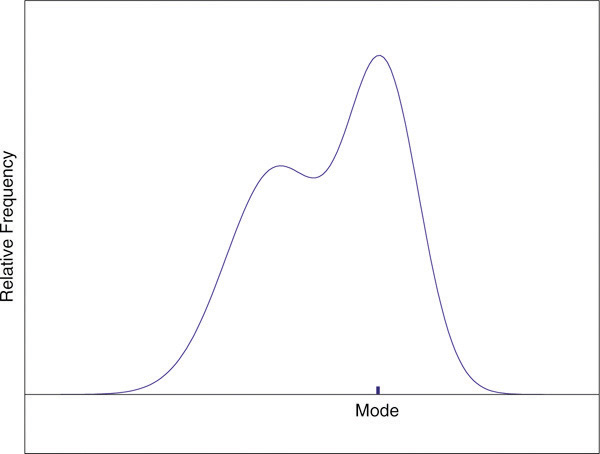
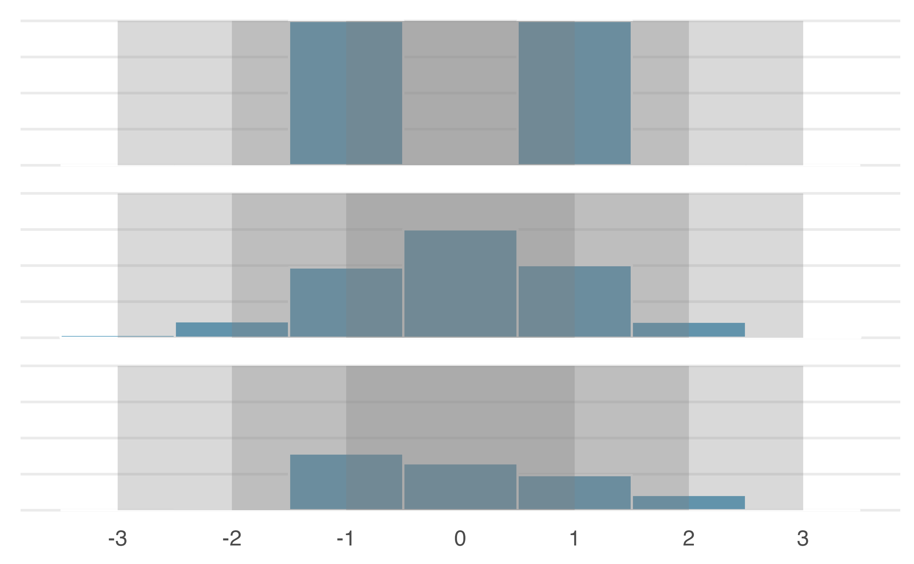
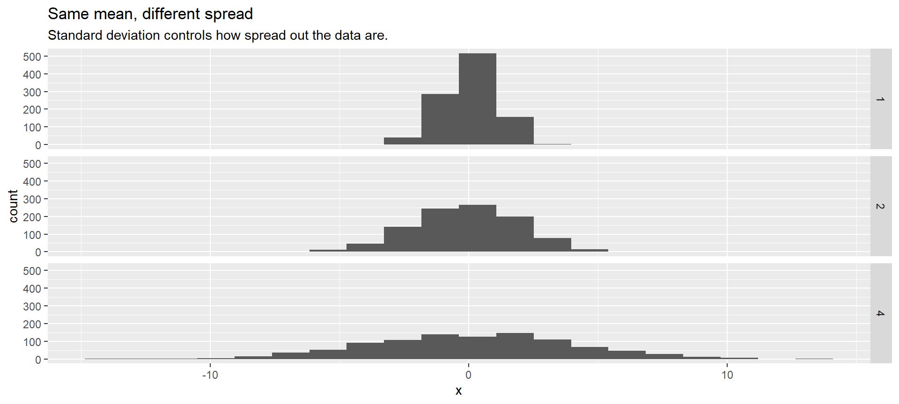
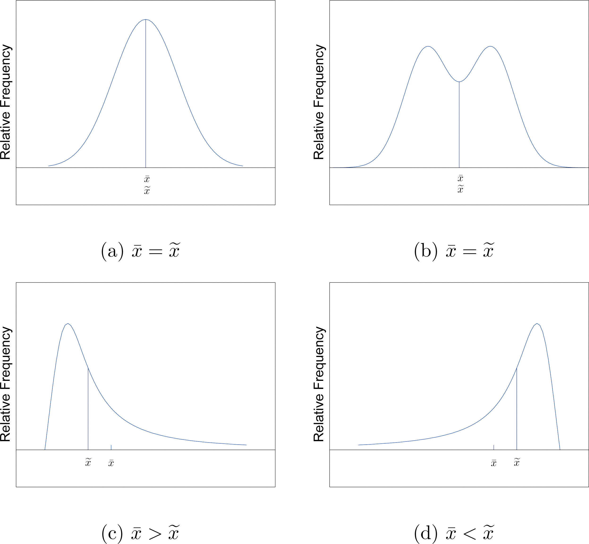
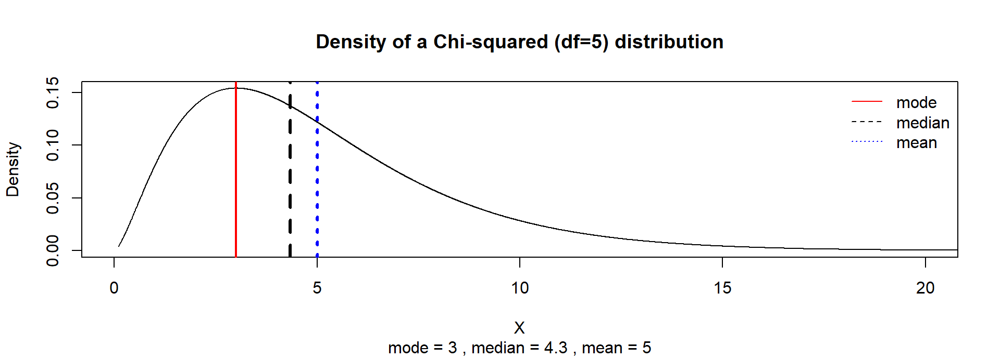
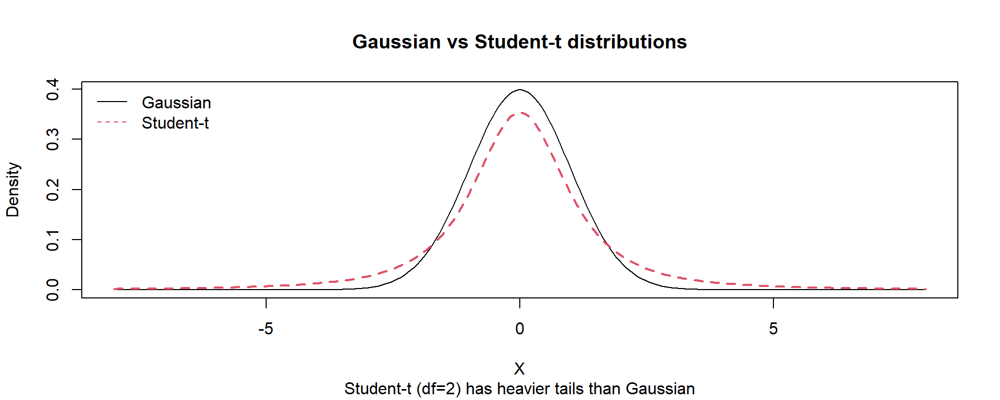

sum_X sum_X_sq sum_X_all_sq
6 14 36 ECON 2B03, Winter 2026
Part A | Lecture 5
Chris Muris, McMaster University
Readings: SZ 2.2-2.3, IMS 5.3-5.4
Homework: SZ 2.2: 2, 6, 8, 10, 12, 20; SZ 2.3: 2, 4, 10, 13, 18; IMS 5: 5, 12, 14, 19, 22, 23
R and quartoWe will often need to accumulate or sum some variable of interest.
For example, \(A\) might denote income, with \(A_1\) being the income of the first person in our sample, \(A_2\) that for the second, and so on
We want to avoid writing things like: \[\begin{align*} A_1&+A_2+A_3+A_4+A_5+A_6+A_7+A_8\dots,\text{ or } \\ (A_1-B) &+ (A_2- B) + (A_3-B) + (A_4-B)\dots,\text{ or even } \\ (A_1-B)^2 &+ (A_2 -B)^2 + (A_3-B)^2 + (A_4-B)^2\dots, \end{align*}\]
Instead, we will use the summation operator
In R: use the sum() function
R: mean(x)Example: Mean
R: use sort() and median()Example: Median
Consider the sample (\(n=10\)): 112, 114, 98, 91, 112, 64, 113, 94, 94, 82.
Sorted data: \[X_{(1)}=64,\;X_{(2)}=82,\;X_{(3)}=91,\;X_{(4)}=94,\;X_{(5)}=94,\;X_{(6)}=98,\;X_{(7)}=112,\;X_{(8)}=112,\;X_{(9)}=113,\;X_{(10)}=114.\]
Because \(n\) is even, the median is \[\widetilde X=\frac{X_{(5)}+X_{(6)}}{2}=96.\]
Case Study: Bill Gates walks into a diner
“Bill Gates walks into a diner… and the average salary changes.” (Vickers, 2010)
Consider a diner on Tuesday at 08:30, with 7 customers. Their earnings, and the mean and median earnings are, in thousands of USD
R: there is no built-in function for the statistical mode; use a frequency table
R: use var()The standard deviation:
R: use sd() for the sample standard deviationExample: Variance and standard deviation
Let \(X = (1,2,3)\). Then \(n=3\) and \(\bar X = 2\).
Consider the sample: \(X_1=112\), \(X_2=114\), \(X_3=98\), \(X_4=91\), \(X_5=112\), \(X_6=64\), \(X_7=113\), \(X_8=94\), \(X_9=94\), \(X_{10}=82\).
Many different shapes are consistent with the same sample mean (0 below) and standard deviation (1 below).

For a given mean and shape, the standard deviation indicates how spread out the measurements are relative to the mean.

R:
range() returns \((X_{(1)},X_{(n)})\) (min and max), not the scalar \(R\)min() and max() for the two endpointsThe skewness of a distribution measures its deviation from symmetry.
Focus on sign, not magnitude:
In this course: focus on the sign and the picture; compute in R


The kurtosis of a distribution is a measure of how heavy its tails are (how often you see extreme values).
The normal distribution has \(\text{kurtosis}=3\) (we will meet the normal distribution later).
\(\text{kurtosis} > 3\): heavier tails than normal
\(\text{kurtosis} < 3\): lighter tails than normal
R:
install.packages("moments")library(moments)skewness() and kurtosis()Example: Kurtosis - Gaussian and Student-\(t\)

Exercise: sums and deviations
For the sample data set \((-1,0,1,4)\), compute the requested sums.
Exercise: range and variance
Use the sample \(x = (-1, 0, 1, 4, 1, 1)\).
Find the range, sample variance, and sample standard deviation.
Exercise: median, mode, and mean
Construct a data set of size \(n=4\) where the median and mode match but the mean is different.
Provide one valid data set and verify the three summaries.
Example: \((0, 1, 1, 3)\).
These slides started from J. S. Racine’s slides for ECON2B03 at McMaster University.
Readings are from
References
Vickers, A. (2010). What is a P-value anyway? 34 stories to help you actually understand statistics. Addison-Wesley.